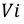
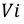
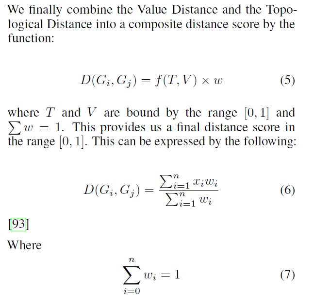
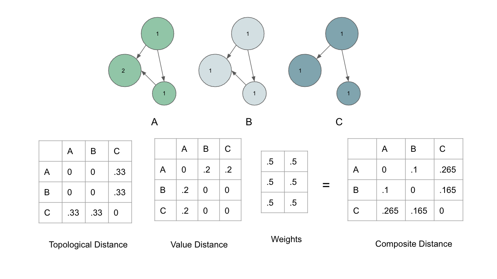
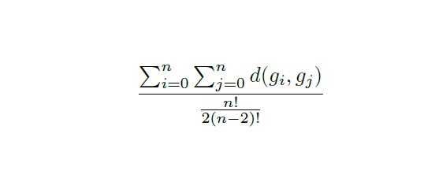

Distance Module
R-K Distance is a composite distance function that measures the distance and similarity between any two R-K Diagrams in a metric built to measure homeomorphism using a combination of Topological Distance as an extension of Jaccard Distance & Value/Magnitudinal Distance based on an extension of Mahalanobis Distance. R-K Distance is critical to the tuning and understanding of R-K Diagrams for its ability to quantitatively measure divergence (and its dual, i.e. similarity) across all R-K Diagrams rendered from a particular R-K Model.
In our implementation, we used a weighted distance function  by applying composite
distance function based on geometric and value distance, where the geometric distance was implemented over an extension of Jaccard distance based upon nodes and edges, and the value distance was computed using covariance measures inspired by the Mahalanobis distance
Formulation, such that our final R-K Distance equation can be represented as:
by applying composite
distance function based on geometric and value distance, where the geometric distance was implemented over an extension of Jaccard distance based upon nodes and edges, and the value distance was computed using covariance measures inspired by the Mahalanobis distance
Formulation, such that our final R-K Distance equation can be represented as:
where  is a composite function based on topological distance T and value/magnitudinal distance V weighted by vector w.
is a composite function based on topological distance T and value/magnitudinal distance V weighted by vector w.
This also allows for the quantitative comparison of overall homeomorphic similarities between R-K Diagrams defining similarity as a dual of R-K Distance as:

With all results normalized between 0 and 1. Such measures of homeomorphic similarities between R-K Diagrams can be optimized in our metric-space via combinatorial machine learning techniques such as Nevergrad which maximize or minimize the R-K Distance for the purpose of ML Classifications.
A. Topological Distance Function
The Topological Distance Function allows us to compare topological similarities and differences between various clusters and simplexes of any two R-K Diagrams. It allows for the quantitative comparison of large-scale geometric and topological differences between R-K Diagrams. In our initial implementation, we have extended the Jaccard distance formulation to provide a comparison of geometric distance across R-K Diagrams. The Jaccard distance is one of many possible distance functions that can be applied toward graph distances. It is simple but effective in many machine learning algorithms and is a widely applied algorithm across many domains.

Where in the extension of our formulation A and B are defined as a tuple that represents an edge  such that  is the source node and
such that  is the source node and  is the sink.
is the sink.
For the quantitative comparison of R-K Diagrams, it is critical to evaluate the Jaccard distances against the directed edges, such that the distance measure is sensitive to topological differences due to direction. If a Jaccard distance is applied only at the vertex level, key information about the directed edges and the linked vertices would be lost. This would be ineffective for the quantitative comparison of geometric and topological properties across R-K Diagrams. Hence we have modified the original formulation and used edges for Jaccard measurements, such that critical features in the distance measurement are preserved.
- class rktoolkit.functions.distance.jaccard(s1, s2)
Topological Distance Function
- Parameters
s1 (set) – Data Set 1
s2 (set) – Data Set 2
- Returns
Topological Distance
- Return type
float
B. The Value/Magnitudinal Distance
The Value/Magnitudinal Distance is intended to amplify the effects of the distance measure when topology isn’t sufficient to demonstrate differences. For example, in the case of store sales, a purchase could be very similar topologically, but very different in terms of magnitude as the actual sales value differs radically across R-K Diagrams. By comparing the magnitude of the nodes as well as the topology, it provides a clear distinction across R-K Diagrams when topological differences are not sufficient. We extended the Mahalanobis distance to provide this value/magnitudinal distance measure, which can be computed across the entire dataset and then normalize the values to between 0 and 1 such that we are bound between [0, 1] pre-weighting.

- class rktoolkit.functions.distance.mahalanobis(x=None, data=None, cov=None)
Value Distance Funtion
- Parameters
x (ndarray, optional) – vector or matrix of data with, say, p columns, defaults to None
data (ndarray, optional) – ndarray of the distribution from which Value distance of each observation of x is to be computed, defaults to None
cov (ndarray, optional) – covariance matrix (p x p) of the distribution. If None, will be computed from data.
- Returns
Value/Magnitudinal distance.
- Return type
ndarray
C. Composite Distance Function
These two distance functions are then combined in a unique way to give us the final measure of R-K distance and detailed below:
R-K Distance thereby produces a composite distance function combing both components of Topological and Value/Magnitudinal Distance in a unique way to allow for the homeomorphic comparison of both graph and topological properties of R-K Diagrams as demonstrated in the diagram below:
D. Objective Function:
The R-K distance has an ML based Objective Function which is defined as follows:
The goal of the objective function, as defined above, is to maximize divergence across R-K Diagrams by minimizing the similarity across diagrams. This is determined through a distance function defined in the Measuring R-K Distance subsection, which takes into account topological and value / magnitudinal similarities across R-K Diagrams using a weighted distance function. We chose an even distribution of [0.5, 0.5] for w as a prior, as there is no reason to bias the weights apriori. Over iteration of θ, we will attempt to minimize the overall loss. Assuming an infinite number of iterations, we would hope that we maximize divergence across R-K Diagrams such that no R-K Diagram is exactly the same except for the same data, which would deterministically produce the same R-K Diagram.
- class rktoolkit.ml.objective_functions.SampleObjectiveFunction(pipeline, sample_size, w0, df, hft, mdist, distance_function)
Sample objective function reduces distance
- evaluate(w)
- Parameters
w (tuple) – Weights to be used for evaluation in the objective function
- Returns
The R-K distance evaluated from the objective function
- Return type
float
E. Non-Gradient Combinatorial ML Optimiser
Because topological distance functions do not exhibit continuous gradients we employed a gradient free optimization Based on Nevergrad / NGOpts. NGOpts is an optimizer built by Facebook and the default suggested optimizer for non-gradient combinatorial machine learning involving graphs with discrete nodes and edges.
An implementation of the Non-Gradient Combinatorial ML Optimiser is Here.